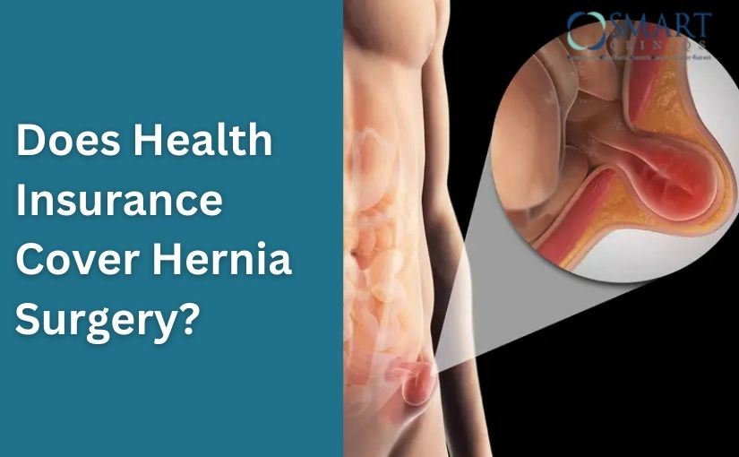

Hernia is a common medical condition that occurs when an internal organ pushes through a weak spot in the surrounding muscle or tissue. Many people experience symptoms such as pain, swelling, or discomfort, especially when lifting heavy objects, coughing, or bending. In most cases, surgery is the only effective treatment for repairing a hernia and preventing complications.
One of the most common questions patients ask is: does health insurance cover hernia surgery? The good news is that most health insurance policies in India provide coverage for medically necessary hernia surgery. However, the coverage may depend on several factors such as the type of insurance plan, waiting period, policy terms, and whether the surgery is performed in a network hospital.
Does Health Insurance Cover Hernia Surgery?
Does health insurance cover hernia surgery? Learn about insurance coverage, eligibility, and factors affecting claims for hernia surgery and treatment costs.
Book Your Appointment TodayUnderstanding Hernia Surgery
Hernia surgery is performed to repair the weakened muscle wall through which tissue or organs are protruding. During the procedure, the surgeon pushes the protruding tissue back into place and strengthens the weak area with stitches or surgical mesh.
There are 3 common types of hernia surgery:
1. Robotic Hernia Surgery
Robotic hernia surgery is an advanced and highly precise minimally invasive technique. In this procedure, the surgeon controls robotic instruments through a specialized console to repair the hernia. Small incisions are made, and a camera provides a clear 3D view of the surgical area. The robotic system allows greater accuracy, flexibility, and control during the procedure. Patients often experience less pain, smaller scars, and a faster recovery compared to traditional methods.
2. Laparoscopic Hernia Surgery
Laparoscopic hernia surgery is another minimally invasive technique. The surgeon makes a few small incisions and inserts a thin tube with a camera to view the hernia inside the body. Specialized instruments are used to repair the weakened muscle and place surgical mesh for support. This method usually results in less postoperative discomfort, minimal scarring, and quicker recovery.
3. Open Hernia Surgery (Used in Some Cases)
Open hernia surgery is a traditional approach and may be recommended in certain cases, such as very large or complicated hernias. In this procedure, the surgeon makes an incision near the hernia site to access and repair the weakened muscle wall. The protruding tissue is returned to its original position, and the area is reinforced with stitches or surgical mesh to prevent recurrence.
Does Health Insurance Cover Hernia Surgery?
Many patients ask does health insurance cover hernia surgery because surgical treatment can sometimes be expensive. In most cases, the answer is yes. Health insurance companies generally cover hernia surgery because it is considered a necessary medical procedure rather than a cosmetic treatment.
Insurance policies typically cover the following expenses:
- Hospital room charges
- Surgeon fees
- Operation theatre charges
- Anesthesia charges
- Medical tests and diagnostics
- Medicines during hospitalization
- Pre- and post-hospitalization expenses
However, coverage may depend on specific conditions in your policy.
Hernia Surgery Covered by Insurance: Key Factors
Although hernia surgery covered by insurance is common, some factors determine whether the claim will be approved.
1. Waiting Period
Most health insurance policies have a waiting period for pre-existing diseases. If the hernia existed before the policy was purchased, you may need to wait 1–3 years before coverage begins.
2. Medical Necessity
Insurance companies usually cover the surgery only if it is medically required. If a doctor recommends surgery due to pain, complications, or risk of strangulation, the claim is more likely to be approved.
3. Network Hospitals
Insurance providers often prefer surgeries performed in network hospitals. These hospitals offer cashless treatment, meaning you may not need to pay the entire amount upfront.
4. Policy Coverage Limit
Your insurance plan may have a maximum coverage limit. If the surgery cost exceeds this amount, you may need to pay the remaining balance.
Is Hernia Surgery Covered by Insurance in India?
Many people specifically ask is hernia surgery covered by insurance India because policies can differ between countries. In India, most comprehensive health insurance plans include hernia surgery as part of hospitalization coverage.
Both private and government insurance providers usually include surgical procedures like hernia repair under their policies. However, it is important to review the policy details to understand:
- Waiting periods
- Coverage limits
- Cashless hospitalization options
- Exclusions in the policy
Consulting with experienced surgeons such as Dr. Atul Peters can also help patients understand treatment options and the documentation required for insurance approval.
Types of Hernia Surgery Covered by Insurance
Most insurance providers cover different types of hernia repair procedures, including:
Inguinal Hernia Surgery
This is the most common type of hernia and occurs in the groin area. Insurance plans typically cover surgical repair because untreated inguinal hernias can lead to complications.
Umbilical Hernia Surgery
Umbilical hernias occur near the belly button and are common in both children and adults. Surgical repair is usually covered by insurance.
Hiatal Hernia Surgery
This type occurs when part of the stomach pushes into the chest cavity. Surgery may be recommended if medications and lifestyle changes do not relieve symptoms.
Incisional Hernia Surgery
An incisional hernia develops at the site of a previous surgical incision. Most insurance policies cover treatment if it causes symptoms or complications.
Does Insurance Cover Hernia Surgery for All Patients?
Although the question does insurance cover hernia surgery is often answered positively, coverage is not automatic in every case. Approval depends on several factors.
Insurance companies may deny claims if:
- The surgery is considered elective or cosmetic
- The waiting period has not been completed
- The patient did not disclose a pre-existing condition
- Required documents are missing
To avoid claim rejection, it is important to follow the proper procedure and provide all necessary medical reports.
Documents Required for Insurance Claim
To receive insurance coverage for hernia surgery, you may need to submit several documents, including:
- Doctor's prescription recommending surgery
- Diagnostic reports and medical history
- Hospital admission records
- Surgical procedure details
- Medical bills and receipts
- Insurance claim form
Providing accurate documents increases the chances of quick claim approval.
List of Insurance That Cover Hernia Surgery
Many health insurance companies and TPAs in India provide coverage for hernia surgery. These include:
- Acko General Insurance Company Ltd
- Aditya Birla Health Insurance Company Ltd
- Bajaj Allianz General Insurance Company Ltd
- Care Health Insurance Co. Ltd
- Chola Mandalam MS General Insurance Co. Ltd
- Ericson TPA Healthcare Pvt. Ltd
- Family Health Plan (TPA) Ltd
- Future Generali India Insurance Co. Ltd
- Galaxy Health Insurance
- Genins India TPA Limited
- Go Digit General Insurance
- Good Health TPA Services Ltd
- HDFC Ergo General Insurance Co. Ltd
- Health India TPA Services Pvt. Ltd
- Health Insurance TPA Of India Limited
- Heritage Health TPA Pvt. Ltd
- ICICI Lombard General Insurance Co. Ltd
- ICICI Prudential Life Insurance Co. Ltd
- IFFCO Tokio General Insurance Co. Ltd
- Liberty Videocon General Insurance Company Limited
- Link-K Insurance TPA Services
- Magma HDI General Insurance Company Limited
- Manipal Cigna Health Insurance Co Ltd
- MD India Healthcare Services (TPA) Pvt. Ltd
- Medi Assist India TPA Pvt. Ltd
- Medsave Healthcare TPA Ltd
- National Insurance Company Limited
- Navi General Insurance Limited
- Niva Bupa Health Insurance Company Limited
- Paramount Health Services (TPA) Pvt. Ltd
- Park Mediclaim TPA Pvt. Ltd
- Raksha TPA Pvt. Ltd
- Reliance General Insurance Co. Ltd
- Safeway TPA Services Pvt. Ltd
- SBI General Insurance Company Limited
- Star Health & Allied Insurance Co. Ltd
- Tata AIG General Insurance Company
- The New India Assurance Co. Ltd
- The Oriental Insurance Company Limited
- United India Insurance Company Limited
- Universal Sompo General Insurance Co. Ltd
- Vidal Health TPA Pvt. Ltd
- Volo Health Insurance TPA Private Limited
Coverage details may vary depending on the specific plan and policy conditions.
Benefits of Having Insurance for Hernia Surgery
Health insurance can provide several advantages when undergoing hernia surgery.
Reduced Financial Burden
Surgical treatment can be expensive, but insurance helps cover a large portion of the cost.
Access to Better Treatment
Insurance allows patients to receive treatment at reputable hospitals and from experienced specialists.
Cashless Hospitalization
Many hospitals offer cashless treatment, reducing the need for large upfront payments.
Coverage for Additional Expenses
Some policies cover pre- and post-hospitalization expenses, including diagnostic tests and medications.
Does Health Insurance Cover Hernia Surgery?
Does health insurance cover hernia surgery? Learn about insurance coverage, eligibility, and factors affecting claims for hernia surgery and treatment costs.
Book Your Appointment TodayFinal Thoughts
To conclude, many patients often worry about the cost of surgical treatment and ask does health insurance covers hernia surgery. The reassuring news is that most health insurance policies in India provide coverage for hernia repair because it is considered a medically necessary procedure. Insurance plans typically cover hospital charges, surgeon fees, operating theatre costs, anesthesia, and other medical expenses related to the surgery.
Getting timely treatment is essential because untreated hernias can lead to serious complications such as pain, obstruction, or strangulation of tissues. Consulting an experienced specialist ensures accurate diagnosis and the right treatment plan. Patients seeking advanced and safe surgical care often consult Dr. Atul Peters, recognized by many as the Best Hernia Surgeon in Delhi, for expert evaluation and treatment. With proper medical guidance and the support of health insurance, patients can undergo hernia surgery with greater confidence and financial peace of mind.